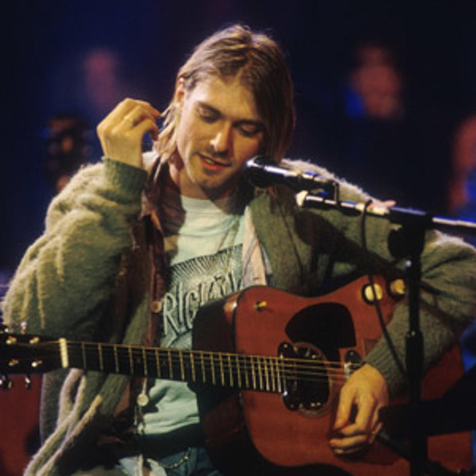

Nirvana was an American rock band formed in 1987 in Aberdeen, Washington, by singer and guitarist Kurt Cobain and bassist Krist Novoselic. The band played a crucial role in popularizing the grunge movement of the early 1990s, blending raw energy with deeply emotional and often angst-filled lyrics. Their breakthrough came with the release of Nevermind in 1991, featuring the legendary hit Smells Like Teen Spirit, which catapulted them to worldwide fame. The album, along with follow-ups like In Utero, cemented Nirvana’s place in rock history with songs like Come as You Are, Lithium, and Heart-Shaped Box. Drummer Dave Grohl, who joined in 1990, completed the band's most famous lineup. Nirvana's music resonated with a generation, expressing themes of alienation, frustration, and social criticism. Cobain's death in April 1994 marked the end of the band, but their legacy remains unmatched. Their influence continues to shape modern rock, and they were inducted into the Rock and Roll Hall of Fame in 2014. Nirvana’s impact on music, culture, and fashion endures, making them one of the most significant bands in rock history.
After Kurt Cobain’s death in 1994, Nirvana and the music world were left in shock and mourning. His passing marked the end of the band, as Nirvana disbanded shortly afterward, with no further material being released under the band's name. His death also sparked a widespread sense of loss, as he was seen not only as a musical icon but also as a voice for ageneration. Cobain’s struggles with addiction, mental health, and fame had been well-known, but his death intensified the conversation around these issues in the music industry. In the immediate aftermath, his bandmates, Krist Novoselic and Dave Grohl, both struggled to cope with the loss. Novoselic withdrew from the public eye for a time, while Grohl, who had joined the Foo Fighters and achieved success with the band, continued to shape his own musical career. Grohl’s new projects allowed him to build a legacy of his own outside of Nirvana, but he has often reflected on his time with Kurt and Nirvana in interviews and music.
Following Cobain’s death, Nirvana’s popularity surged even further. Their albums, especially Nevermind and In Utero, saw a massive rise in sales, and Cobain’s image as a misunderstood, tortured genius became even more prominent in popular culture. The band’s music continued to influence countless artists, and Nirvana became an even greater symbol of the grunge movement. Several posthumous releases of Nirvana’s music came out, including the "MTV Unplugged in New York" album (1994), which featured one of Cobain’s final performances, as well as the compilation albums "Nirvana" (2002) and "With the Lights Out" (2004). These releases helped keep the band's legacy alive.Cobain’s death also sparked widespread media attention and speculation, leading to numerous books, documentaries, and films about his life and legacy. Films like "Kurt Cobain: Montage of Heck" (2015) provided a deeper look into his personal life, struggles, and genius.
Despite the controversies surrounding his death, including conspiracy theories suggesting foul play, the official ruling remains that Cobain died by suicide. His tragic passing at the age of 27 cemented his status as a member of the 27 Club, a group of iconic musicians who died at that age, including Jim Morrison, Jimi Hendrix, and Janis Joplin. Years after his death, Kurt Cobain remains one of the most enduring figures in rock music, with his legacy continuing to influence new generations of musicians and fans.